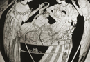

Birth
Heracles is the son of Zeus and the mortal woman Alcmena. The mortal husband of Alcemna, Amphitryon, is sometimes referred to as the father of Heracles, but it is Zeus who actually sires Heracles with Alcmena in her husband’s absence. Zeus, ever the insatiable lover, came to Alcmena in the disguise of her husband and therefore tricked her into sleeping with him. Alcmena in fact gives birth to twins, Heracles and his brother Iphicles. From his very birth, Heracles is a precocious child able to undertake feats uncharacteristic (even impossible) for a baby. In this respect, his young exploits recall those of precocious gods such as Hermes. In fact, Heracles is such a powerful young man that from his birth he promises to be a great ruler among men. According to Homer, Zeus proclaims on the day that Heracles is to be born that ‘Eileithyia, helper in childbirth, will [today] bring to the light a man who shall rule over all that dwell around him; he shall be of the race that is of my blood.’
This boasting of his father causes problems for Heracles. For Hera, jealous as always of Zeus’ love-affairs, plays a trick to undermine Zeus’ boast. She speeds up the birth of the wife of the mortal Sthenelus (Alcmena’s uncle) and delays the birth of Heracles and Iphicles. Thus, according to Zeus’ statement (which in the mouth of Zeus serves as a binding prophecy) Sthenelus᾽ son Eurystheus becomes the one who rules all that dwell around him. Heracles thus has to serve Eurystheus, and it is for him that he must later in life complete his 12 labours. Another version of Hera’s anger has the goddess send a pair of snakes to kill Heracles just after he is born. Heracles, however, is up to this challenge, even as an infant, and strangles the snakes as they attack him (see image 1). Yet another story has Hera make Heracles go mad later in life. In a rage, Heracles kills his first wife Megara and their children. Once sane, he is purified by and advised by the Oracle of Delphi to go to Tiryns and serve Eurystheus there for 12 years, completing any labours he should propose.
{kind=link}